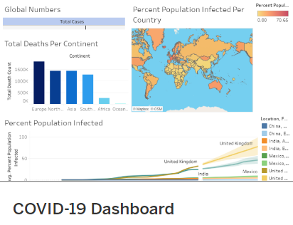

In this project, I trained and tested a Linear Regression model and Random Forest Regression model to predict the median housing price in California using the California housing dataset.
(This data was retrieved from Kaggle.)
Tools & Technologies: Python (Pandas, Numpy, Matplotlib, Seaborn, scikit-learn), Jupyter Notebook
Skills Used: Machine learning (Linear Regression, Random Forest Regression) Data Preprocessing, Feature Engineering, Encoding, Grid Search, Hyperparameter tuning

In this project, I scraped data from Wikipedia using Python & Beautiful Soup. I then stored the data in a dataframe and saved it as CSV.
(This data was retrieved from Wikipedia.)
Tools & Technologies: Python (Pandas, Beautiful Soup), Jupyter Notebook
Skills Used: Web Scraping, Dataframes

In this project, I used SQL to explore COVID-19 data by creating multiple queries.
(This data was retrieved from ourworldindata.org.)
Tools & Technologies: SQL, Microsoft SQL Server
Skills Used: Aggregate Functions, Converting Data Types, Creating Views, CTE's, Joins, Temp Tables

In this project, I queried data from the COVID-19 Exploration project and
saved the output as Excel tables.
I then imported the tables into Tableau, visualized the data, and created a dashboard.
Tools & Technologies: SQL, Microsoft SQL Server, Excel, Tableau
Skills Used: Querying Data, Data Visualization
In this project, I cleaned and analyzed the Movie Industry dataset from Kaggle.
I looked specifically at correlation between features.
Tools & Technologies: Python (Pandas, Seaborn, Matplotlib, Numpy), Jupyter Notebook
Skills Used: Data Cleaning, Scatter Plots, Correlation Matrices, Heatmaps, Encoding